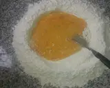
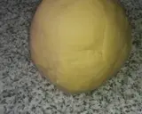
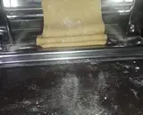
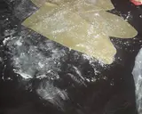
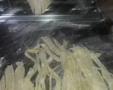
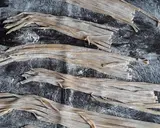
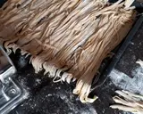

Hacer una corona con Harina, en el centro van los huevos, los mezclo un poco con un tenedor agregó la
sala y aceite

Con el tenedor voy mezclando y agregando harina de los costados... luego sigo amasando con la mano y voy
agregando las cucharadas de agua según haga falta para formar la masa

Se deja descansar la masa... tapada con un repasador o nylon entre 30-40 minutos... después voy cortando
pedacitos de masa que los estiro y paso por la máquina


Dejo descansar un poco la masa ya estirada(40-50 minutos aprox)..y después los corto en la máquina



Se pueden hacer sin máquina... estirando la masa finita... formando un cilindro con ella y cortándola
después con un cuchillo del ancho deseado..